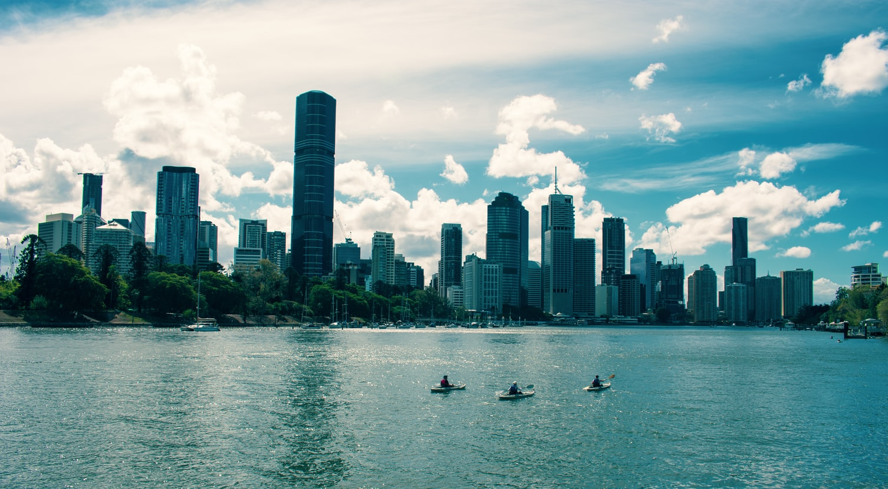

- Queensland
- Newsouthwales
- Victoria
- Australian Capial Territory
- South Australia
- Western Australia
- Northern Australia
- Tasmania
Queensland
Queensland, "the Sunshine State," is Australia's most popular vacation destination. Golden beaches, idyllic tropical islands, fantastic surf breaks, World Heritage-listed rainforests, rivers, reefs, and waterfalls are just some of the state's natural jewels
Queensland is famous for its pristine beaches and tropical islands. Over 200 national parks cover more than 6.5 hectares across the state, plus there are lush mountainous rainforests, bushlands and creeks and flat table lands perfect for farming.
In the database Queensland currently have over 1000 cities, towns, villages and suburbs
I lived 5 towns in queensland such as Stanthorpe , Gatton , Toowoomba , Tingalpa and Brisbane and i've been around 5 other town in queensland for travel like Gold coast ,Warwick, Sunshine coast , Wynnum and ipswich
